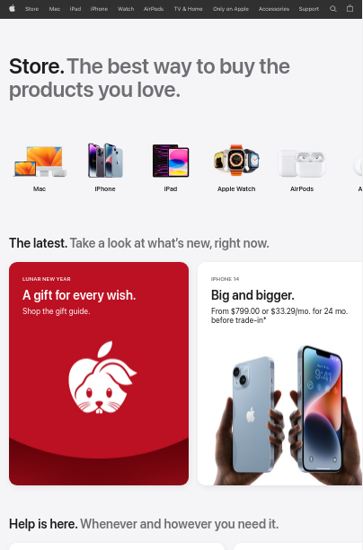
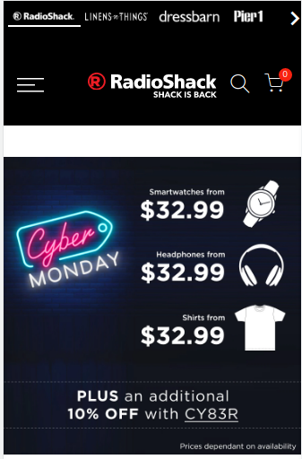
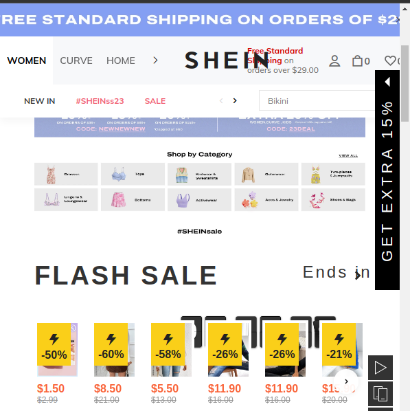

Desing Principles Document
Rommel Juarez
Visual Hierarchy
Apple
https://www.apple.com/store
The images in the apple website have different sizes. The biggest is the Iphone. They also use contrast using the white background and highlighting the red announcement
PARC: Contrast
Radio Shack
https://www.radioshack.com/ 
The page advertisement uses contrast to highlight "Cyber Monday announcement."
Also, the black background makes the logo company more visible.".
PARC: Alignment
Shein
https://us.shein.com/ 
Shein page uses the Alignment PARC technique to put the Flash sales offers in the same line.
They, also use some contrast to highlight the discounts available.